LOGO
Vincent Willem Van GOGH
비주얼 배너 영역
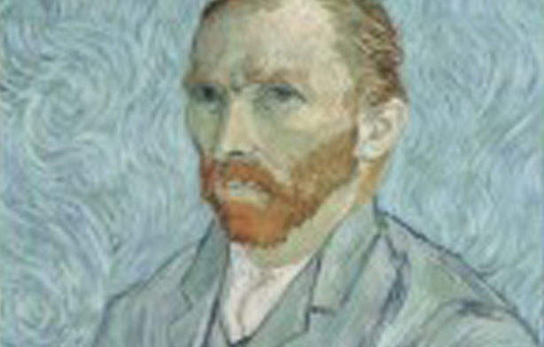
Vincent van Gogh, 자화상
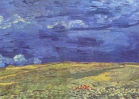
흐린 하늘을 배경으로 한 밀밭
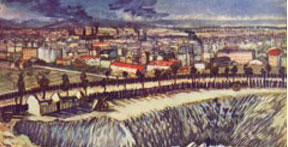
공장지대
띠배너 영역
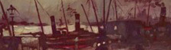
Vincent Van Gogh
배가 정박해 있는 안트베르펜 부두
1885년 패널에 유채 27x20.5cm
작품 갤러리 영역
GALLERY
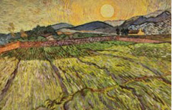
경작된 밭이 있는 풍경
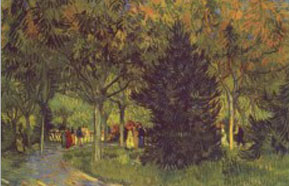
공원의 가로수길
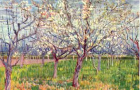
꽃이 핀 과수원
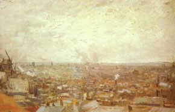
몽마르트에서 본 풍경
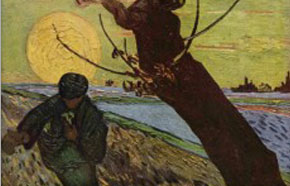
씨 뿌리는 사람
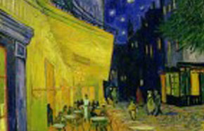
아를르의 포룸
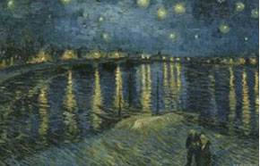
아를의 별이 빛나는 밤
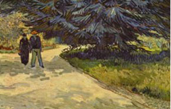
아를의 정원
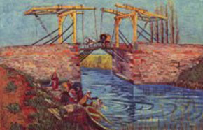
앙글루아 다리
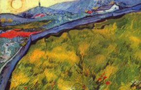
울타리가 있는 초원과 해질녘 산의 풍경
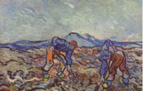
일하는 농부들
해바라기
최근 작품 영역
초 상 화
어머니의 초상
1888년
유화, 캔버스에 유채
40.5 X 32.5 cm
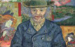
탕귀 영감
1887년 ~ 1888년
유화, 캔버스에 유화
92 X 75 cm
유 채 화
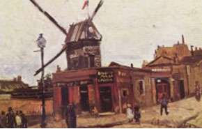
물랭 드 라 갈레트
풍 경 화
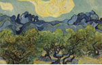
올리브밭 풍경
1889년
유화, 캔버스에 유채
92 X 72.5 cm
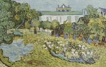
도비니의 정원
1890년
유화, 캔버스에 유채
103 X 53 cm
정 물 화
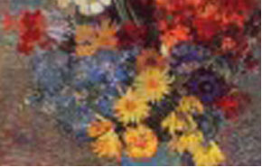
데이지와 아네모네를 꽂은 꽃병의 정물
큰배너영역
BNR